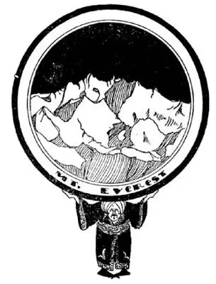

55
Opposite-Feet
对面脚踩之地

THERE is a shop downtown with a department in the basement, underneath the sidewalk. The sidewalk is made of thick glass, and as you look up you can see the feet of the crowds of people as they pass overhead. If the World were made of glass and you could look down through it in the same way, you could see the bottoms of the feet of the crowds passing by on the other side of the World. It is the “Opposite-feet” Land. That sounds awkward, so grown-ups call it “The Antipodes,” which means exactly the same thing—“opposite-feet.” The Opposite-feet Land on the other side of the World is a pie-shaped country called India. It is the half-way country—half-way round the World. You go away from home till you reach India, then, though you keep on going, you are coming back. I went west around the World and a friend of mine went east. We both started at the same time and met in India. When I landed at a place called Calcutta, there he was on the dock waiting to greet me. From Calcutta we used to get a kind of cloth which we called, from the name of the place, calico.
calico comes from Calcutta
加尔各答的卡利科布料
When I say “Indians”, you probably think of tommyhawks, colored feathers, and warpaint. But you are thinking of American Indians—the kind that were in our country before the white man came. There are only a few of these Indians left. They belong to the red race.
There is another kind of Indian that belongs to the white race, the same as we do, and there are more than twice as many of them as there are people in our whole country. They get the name “Indians” from the name of the country where they live—India. India is the country that Columbus was trying to reach by going the other way around the World. When he bumped into America he thought he had reached India, so he called the people he found here Indians. He did not find out until later that America was not India at all, but a new and unknown land, and that the people were really not Indians at all, but Red Men.
India is shut off from the rest of Asia on the north by the highest wall of mountains in the World; they are called the Himalayas, Him-al-ay-as. The highest mountain on the face of the globe is in this range; it is called Mount Everest, after an English engineer named Everest, who measured its height. No one has ever been to the top, yet we know exactly how high it is. An engineer can find out such things. He can tell exactly how high a tree, a church-steeple, or a mountain is without leaving the ground. This mountain is twenty-nine thousand and two feet high—more than five miles high. The top and sides of Mount Everest are covered with snow and ice which never melts away and will always be there until the crack of doom.

It’s the highest mountain in the World
世界上最高的山脉
Men have tried and tried again to climb to the top and many have lost their lives in attempting the climb, but no one has ever been able to get there. The top reaches so high up into the sky that there is very little air up there, and men have to take along canned air to breathe. If they attempt to climb without canned air, they are able to take but a single step and then must stop to breathe many times, like a dog panting for breath, and every few steps they must rest awhile before going on. Two Englishmen, after weeks of struggling up the sides of the giant mountain, got nearer than any other human being ever had before—within a few hundred feet of the top. A companion whom they left at their last stop watched them as they plunged upward in their last desperate struggle, and then—whish!—an icy blast of snow and sleet swept them from sight—forever. The native people think a goddess lives at the top and that she will let no one climb to her, and that it brings bad luck and even death to try to reach such a holy place.
At the other end of the Himalaya Mountains is a high valley which is so beautiful that poets call it a vale instead of a valley. It is the Vale of Kashmir. “Who has not heard of the Vale of Kashmir,” says one poet, “with its roses, the brightest the earth ever gave?” Beautiful lakes with snow-topped mountains, and roses, roses everywhere. It seems as if this should have been the Garden of Eden instead of that sun-baked mud bank between the Tigris and Euphrates.
If you will look at your map of Asia carefully you will see something strange about two of the countries that touch India. The country next to India on the west and the country next to India on the east have the same name, Pakistan. How can two separate countries have the same name? The answer is that Pakistan is one country in two parts. Until after World War II these two parts called Pakistan were both a part of India and all India belonged to England. The people of India, like people almost everywhere, wanted to rule themselves. So finally the English said they would give up India and turn the country completely over to the Indians. This pleased the people of India but there was one trouble with the plan. Most of the people of India believed in a religion called the Hindu religion but a great many others were Mohammedans. These two religions didn’t mix very well. The Hindus wanted India to remain one big country when it became independent. The Mohammedans didn’t want one big country for they knew then the Hindus would do most of the ruling as there were more Hindus in India than Mohammedans. The Mohammedans wanted the country split into separate Mohammedan and Hindu countries. Then the Mohammedans could have a country of their own and not have to be part of a Hindu country. They almost went to war about it but finally both sides agreed to make two countries out of India, a Mohammedan country to be called Pakistan and a Hindu country to keep the name of India.
Now the Mohammedans lived mostly on the western and on the eastern sides of India and the Hindus lived mostly in the middle. So Pakistan became a new country with two separate parts, an eastern part and a western part with the new country of India in between. For Pakistan it must be something like living in a house with the kitchen on one side of the street and the living room on the other side. But it seems to work.
Both India and Pakistan are members of the British Commonwealth of Nations.
【中文阅读】
在市中心人行道下面有个地下商店。人行道是用很厚实的玻璃做的，你在商店一抬头就可以看到很多人的脚从你头顶上走过。如果世界是由玻璃做的，你可以通过同样的方式向下透过玻璃看到世界另一面行人的脚底。这就是“对面脚踩之地”。听起来怪怪的，所以成年人称之为“对跖之地”，其实和“对面脚踩之地”是一个意思。在世界另一面的“对面脚踩之地”是一个馅饼状的国家，名叫“印度”，它就是那个位于中途的国家——环绕世界的中途。你从家出发到印度，虽然你继续前行，却又回到家。我向西出发作环球旅行，我的一个朋友向东出发。我们俩同时启程，然后在印度会面。当我到达一个叫加尔各 答的地方的时候，他正站在码头上迎接我。在加尔各答我们过去常会买一种叫“卡利卡特”（源自印度的原产地名卡利卡特）的布料。
当我说到印第安人时你可能会想到飞鹰、彩色的羽毛和出战前涂在脸上的颜料。你想到的是美洲印第安人——是在白种人来美国之前就居住在这里的土著人。现在这种印第安人很少了。他们属于红种人。
另外一种印第安人属于白种人，和美国人一样，人数是美国人口的两倍多。因为他们居住的国家是印度而被称为“印度人”。印度是哥伦布试图朝另一方向作环球旅行而期望能到达的国家。当他无意之中到达美洲时，他以为已经到了印度，因此他称当地人为印度人。直到后来他才发现，美洲根本不是印度，而是一个新的未知的大陆，当地人也完全不是印度人，而是红种人。
印度北边有世界上最高的山脉，将印度与亚洲其他地区隔离开。这条山脉叫喜马拉雅山脉，地球表面最高峰就在这条山脉里，被称为“埃佛勒斯” [1] ，是因为一位名叫埃佛勒斯的英国工程师测量了它的高度。迄今为止还没有人登上山顶，可是我们知道它的确切高度。一名工程师——不用离开地面就能准确说出一棵树、一座教堂尖塔、或一座山的高度。这座山峰有29,200英尺高——超过5英里高。埃佛勒斯的山顶及四周都被冰雪覆盖了，这些冰雹永远不会融化，一直留在那儿，直到世界末日。
人类一次又一次尝试登上埃佛勒斯峰，很多人在登山时丧生，到目前为止还没有一个人能够登上山顶。山顶极高，上面空气稀薄，登山者得依靠随身携带的氧气罐来呼吸。如果不带氧气罐爬山，每走一步就要停下来呼吸很多次，像狗一样气喘吁吁，每走几步就要停下来休息一会儿才能继续前进。
两名英国人，在这巨大的山体侧面，艰难爬行几周之后，到达了以前别人从未到过的高度，离山顶只有几百英尺了。有个同伴被留在最后一个停留地点，注视他俩奋力向上攀登，作最后一搏。就在这时，——“唿嘘”一声——一阵凛冽的狂风带着雪和冻雨吹来，把两人刮走了，从视线中消失——永远地消失了。当地人认为山顶上住着一位女神，这位女神不愿让任何人爬上山顶，接近她。任何人想要登上如此神圣的地方，就会遭遇厄运，甚至死亡。
在喜马拉雅山脉的另一端是一个很高的山谷，非常美丽，诗人都称它为河谷而不是山谷，那就是克什米尔河谷。“谁没有听说过克什米尔河谷？”一位诗人说，“那里盛开着地球上最美丽的玫瑰花。”美丽的湖泊、白雪皑皑的山峰， 到处都是玫瑰花，似乎这儿应当就是伊甸园，而不是底格里斯河与幼发拉底河之间那块被太阳烤干了的土地。
如果仔细看亚洲地图，你会发现，与印度相连的两个国家，有什么不同寻常的地方。在西边与印度相邻的国家，和在东部与印度相邻的国家，有一个共同的名字——巴基斯坦。两个分开的国家怎么会有相同的名字？答案是巴基斯坦是一个分成了两个部分的国家。直到二战后，这两个叫“巴基斯坦”的地方都是印度的一部分，而整个印度隶属于英国。印度人，像几乎所有国家的人一样，想自己统治自己。最终英国人说他们愿意放弃印度，把国家完全交给印度人民。印度人听了很高兴，但是计划中却出现了一个问题。大多数印度人信仰印度教，但是还有许多人信奉伊斯兰教。这两大宗教不能和平相处。印度教徒希望印度独立时依然是完整的大国，但是伊斯兰教徒不希望这样，因为他们知道那样的话印度教徒就会把这个国家的统治权掌握在自己手里，因为在印度印度教徒的人数比伊斯兰教徒多，他们希望印度分成两个独立的国家——伊斯兰教国家和印度教国家，这样，伊斯兰教徒就能有自己的国家，而不必成为印度教国家的一部分。双方几乎要为之开战，最后，双方达成协议，从印度分出两个国家，伊斯兰教国家将称为“巴基斯坦”，印度教国家继续保持“印度”这个名字。
但是，伊斯兰教徒大多数居住在印度的东西两边，而印度教徒大多数居住在中间。于是，巴基斯坦成为一个新国家，就由互不相连的两个部分组成，而印度这个新国家就在这两部分之间。巴基斯坦有点像一所房子，厨房在马路的一边，而起居室却在另一边。但这似乎还行得通。
印度和巴基斯坦都是英联邦成员国。